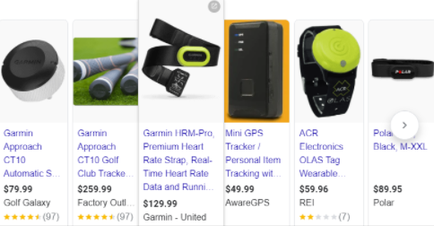

Key Insight
- Users want to track and be rewarded for exercising but are limited by tools’ traditional definitions of
exercise.
Depth of Insight
User Needs
- We hope that users can better understand the sports they usually do. Monitor daily physical activity and
reward users with incentives to do more exercise to stay fit.
User Goals
- Users hope that the software can collect more kinds of sports data, such as cycling, climbing, swimming and so
on.
- At the same time, based on these achieved sports goals, get some rewards. Incentivize users to follow through
with rewards.
User Challenges
- Users are encouraged to maintain exercise habits while receiving rewards, rather than disrupting the user’s
fitness program or terminating the user’s fitness program.
- Some sports are difficult to measure accurately, such as weight-bearing anaerobic training, trampoline, rock
climbing, etc.
- Inappropriate rewards lower users’ expectations for prizes.
Grounding Evidence
- Ray, R., & Neily, C. (2021, April 30). A better path forward for Criminal Justice: Police Reform. Brookings.
Retrieved February 12, 2022,
https://www.brookings.edu/research/a-better-path-forward-for-criminal-justice-police-reform/
- “The most successful intervention, though, turned out to be giving people the equivalent of 9 cents’ worth of
reward points if they returned to the gym after missing a planned workout.”
- Through research on gym fitness, it has been found that the way to make people more involved in fitness and
exercise is to give a certain amount of rewards. This method is much better than just the effects and advantages
of popular science fitness.

- Most sports trackers for wearable devices are not cheap, and accurate tracking devices require users to invest
a lot of money.
- If the user simply uses the mobile phone software to track the movement, it will become very inconvenient to
wear and track.